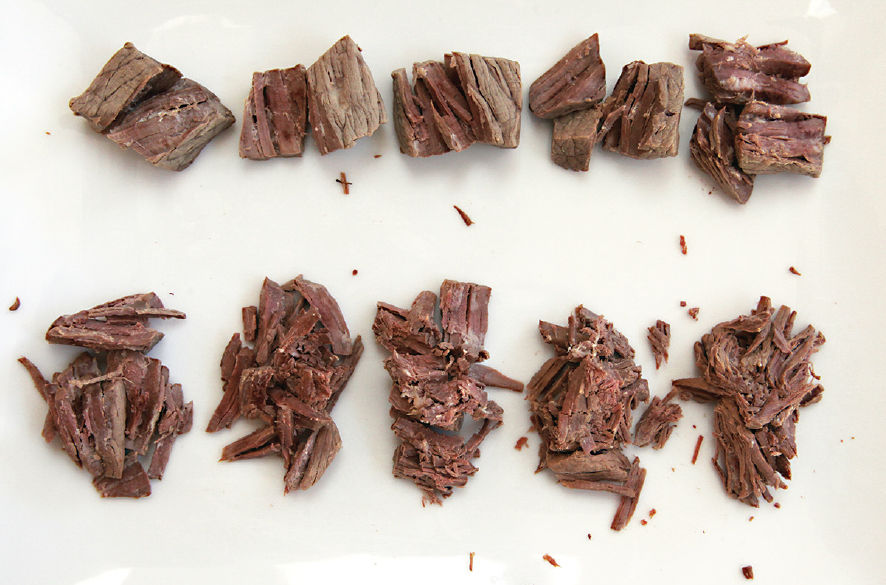
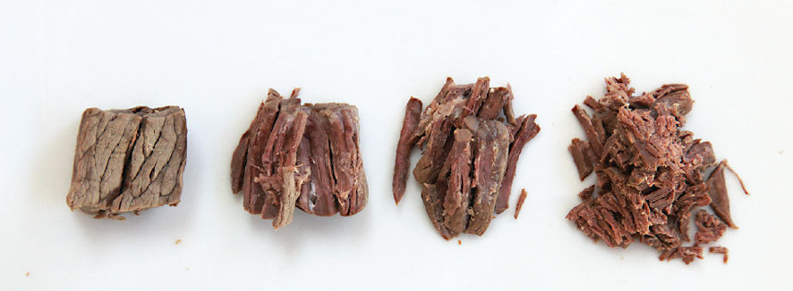

Stew Science: Yes, It’s Possible To Overcook Braised Meats
As anyone who has ever tried to eat at a dozen Nashville hot fried chicken joints in the course of one day can tell you, you absolutely can have too much of a good thing.
I used to be of the mind-set that if cooking a stew for a long time is a good idea, then cooking it even longer is a better idea. I remember my mother requesting a beef stew one winter while I was visiting home. I spent the first day making a veal stock—high in gelatin, rich in texture, the perfect base for a luxurious stew. The second day, I seared boneless short ribs, carefully constructed my broth, and set it all in the oven to cook for the entire afternoon before fishing it out for dinner. The house smelled amazing, and I just knew that the beef was going to be insanely tender and juicy after its long stay in the oven.
What emerged was beef that dissolved into a dry, pulpy mass in your mouth as soon as your jaw moved. The flavor was there, all right, but the beef was totally destroyed (along with my mom’s dreams of stew and my ego).
Turns out you definitely can overcook beef stew. But how do you know when it’s done? What sort of changes in the meat should you look for? I set up an experiment to figure this out.
CUBED STEAK
Using a precise scale, I cut two slabs of top round into forty identical 20-gram cubes. I then added all of the beef to a pot of stock that I maintained at 190°F. After the first 2 hours, I removed four pieces of beef, blotted their surfaces on paper towels, weighed them, then stored them wrapped in plastic wrap. Every half hour after that, I removed another four cubes and repeated the process. I averaged the weight loss in each set of four cubes to arrive at a number that was representative of moisture loss relative to time in the simmering water. I also tasted one cube out of each batch.
Now, here’s the interesting part. Beef that’s been simmered for five hours tastes distinctly drier in your mouth than beef that’s been simmered for only three hours. Yet, when I weighed each cube of beef after cooking, every single one of them ended up at between 11 and 12 grams (for a moisture loss of around 40 to 45 percent), regardless of how long it had cooked. Longer cooking time does not equate to more moisture loss.
So what accounts for the difference in how juicy it tastes?
There are a couple of reasons. First off, our perception of juiciness is not perfectly correlated to actual, measurable juiciness in a piece of meat. Other factors, such as how much fat it has and how much saliva we are producing (and, by correlation, how hungry we are),* can affect how juicy something feels to us. In the case of the beef, there are other physical phenomena at work as well: the juices in the three-hour beef are thicker than those in the five-hour beef, and they’re held more firmly in place.
When connective tissue in the beef first breaks down, it creates a very concentrated zone of gelatin within the meat. This gelatin thickens juices, which helps them stay put inside the meat along with helping them to coat your tongue and mouth. More importantly, as the muscle structure continues to break down within the meat, it has a hard time hanging on to the moisture it has. Think of it as being like the difference between a net full of water balloons and a net full of sponges. Both may have the same amount of moisture, but press down on the sponges and that liquid comes gushing out all at once, leaving behind a dry shell. The water balloons, on the other hand, take a little more effort to break, releasing their juices in discrete bursts—in the same way that juicy meat should release juice steadily as you chew, not gush out all its moisture at once.
Visualizing Texture
For the next test, I wanted to get a good visual representation of the difference in texture I was feeling in my mouth. To do this, I placed a small plate on top of each cube of beef and placed a can of tomatoes on top of it, letting the weight of the tomatoes deform and break down the beef cube. This should ensure every beef cube is pressed with equal force. I then removed the plate and compared the crushed beef.
Here’s how it looked, with the two-hour beef in the upper left corner and beef cooked for a full six-and-a-half in the lower right:

You can see a pretty clear indication of how the beef breaks down over time. This is not unexpected. What is surprising is that this breakdown seems to come in three distinct phases. From two hours to three and a half hours (the first four pieces), the beef looks pretty similar. Then there’s a big jump between three and a half and four hours. The next three pieces look quite similar, then another big jump occurs between five and five and a half hours. I refer to these discrete jumps as the primary, secondary, and tertiary breakdown of beef.†

Primary breakdown occurs when the large swaths of connective tissue that run through a piece of stew beef break down and convert to gelatin. Individual cubes will still hold their shape very well but will show tenderness when you bite into them. There is no chewiness in the beef, but neither does the beef shred readily.
Secondary breakdown is when the tissue holding together individual muscle fibrils (the long, skinny bundles of muscle cells that give meat its distinct grain) breaks down and the fibrils easily separate from each other. At this stage, the beef is very easily shredded—even vigorous stirring will do it. This is the stage you’re looking for in dishes that are meant to contain shredded meat, like Cuban ropa vieja, or beef barbacoa for a taco, or meat that may become a ragù for pasta.
Tertiary breakdown is when those individual muscle fibrils themselves break down, turning from distinct, juice-filled strands into pulpy mush. At this stage, your meat is beyond overcooked. The dogs are gonna get a nice treat for dinner, but you won’t.
Of course, all of these phases are timed based on the assumption that you’re cooking your meat gently, at a bare simmer. Rapidly simmering or cooking at a lower temperature will hasten or slow down the rate at which the meat reaches each stage. Different cuts of meat will also undergo changes at different rates, depending on the ratio of fat to lean to connective tissue, as well as how tough or distinct the individual muscle fibers are.
My advice? Use the timing in any stew recipe as a guideline. Start checking your meat when you hit around 80 percent of the total recommended cooking time and stop cooking as soon as it reaches the stage at which the meat is tender but not falling apart—so, if a recipe says to cook the stew for two and a half hours, start checking it around the two-hour mark.
*Interestingly, this means that if we think something is going to be juicy, it will actually taste juicier. Neat!
†Partly because it’s accurate, and partly because words like “tertiary” make you sound smart.